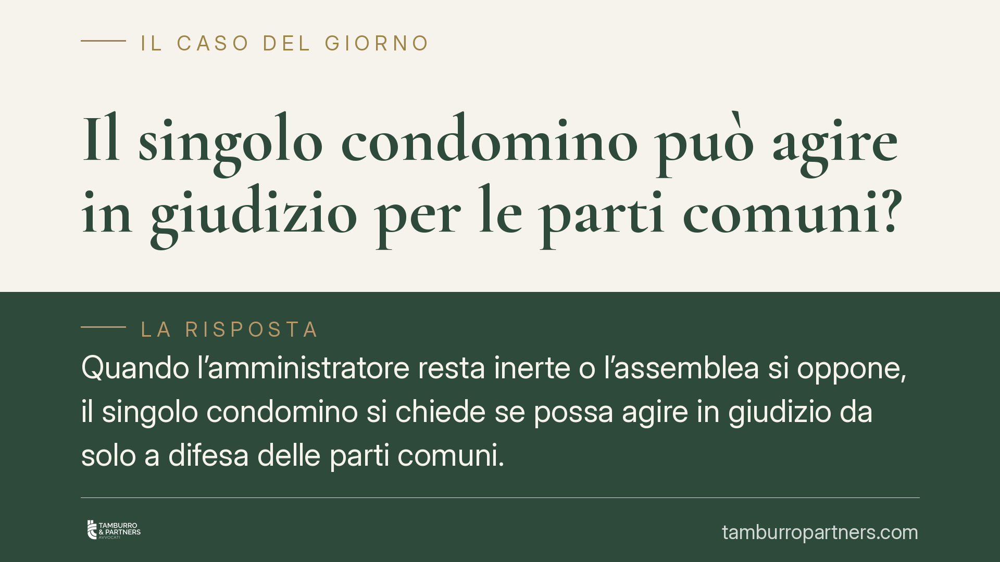

Il singolo condomino può agire in giudizio per le parti comuni?
Quando l'amministratore resta inerte o l'assemblea si oppone, il singolo condomino si chiede se possa agire in giudizio da solo a difesa delle parti comuni. La questione tocca beni condivisi da tutti e presenta profili delicati: la legittimazione del singolo esiste, ma la sua portata resta oggetto di orientamenti non uniformi. Vediamo cosa dice il quadro normativo.

Il fatto
Un tetto che perde, una facciata ammalorata, un vizio nelle opere appena eseguite: sono situazioni che riguardano parti comuni dell'edificio. In teoria spetta all'amministratore attivarsi. Ma cosa accade se l'amministratore non agisce, o se l'assemblea decide di non procedere?
Il singolo condomino non è necessariamente privo di strumenti. La possibilità di agire personalmente a tutela delle parti comuni è riconosciuta in linea di principio, con alcuni limiti che è importante comprendere prima di muoversi.
Inquadramento normativo
Bisogna anzitutto distinguere due piani. L'art. 1130 del Codice civile elenca le attribuzioni dell'amministratore, tra cui l'esecuzione delle delibere e la conservazione delle parti comuni. L'art. 1131 c.c. disciplina invece la rappresentanza dell'amministratore, sia attiva (agire per il condominio) sia passiva (essere convenuto).
La legittimazione del singolo condomino ad agire non nasce da queste norme sulla gestione, ma dalla natura stessa del suo diritto. Le parti comuni sono oggetto di comproprietà: ciascun condomino è titolare di un diritto reale pro quota sul bene condiviso. Su questa base, e in coerenza con i principi in materia di comunione (artt. 1102 e 1105 c.c.), si riconosce al singolo la facoltà di agire per la conservazione della cosa comune, anche a fronte dell'inerzia dell'amministratore o di una delibera contraria.
È però un punto che richiede prudenza. La portata concreta dell'azione del singolo — in particolare se possa agire per l'intero o solo pro quota, e in quali materie — è oggetto di orientamenti giurisprudenziali non uniformi. Non si tratta quindi di un principio pacifico e uniformemente applicato: la soluzione dipende dal tipo di azione e dalle circostanze del caso.
Implicazioni pratiche
Per il condomino che vede trascurate le parti comuni, questo significa che non è del tutto disarmato. Esistono margini per:
- agire in giudizio a tutela del bene comune, in caso di danno o pericolo;
- intervenire in un processo già in corso che riguarda le parti comuni;
- impugnare una sentenza sfavorevole quando l'amministratore non lo faccia.
Lo stesso vale, in linea di principio, per le azioni verso i soggetti coinvolti in interventi sull'edificio, come il direttore dei lavori o l'appaltatore, quando emergano vizi o inadempimenti.
Attenzione, però, ai rischi. Un'azione individuale può correre in parallelo a quella del condominio o di altri condomini, con il pericolo di decisioni contrastanti su questioni sovrapponibili. Inoltre, agire senza il conforto di una delibera espone chi promuove la causa ai costi e alle conseguenze in caso di esito negativo.
Un ulteriore profilo delicato riguarda i termini: molte azioni — soprattutto le impugnazioni di sentenze — sono soggette a termini brevi e non prorogabili. Un ritardo può precludere definitivamente la tutela, a prescindere dalla fondatezza delle ragioni.
Cosa fare in concreto
- Verifica la natura del problema: accerta se riguarda davvero una parte comune e se sussiste un danno attuale o un pericolo concreto.
- Sollecita formalmente l'amministratore per iscritto, chiedendo che convochi l'assemblea e attivi le azioni necessarie; conserva prova dell'invio.
- Controlla i termini applicabili, in particolare quelli per impugnare sentenze o eccezioni, che sono spesso brevi e non recuperabili.
- Documenta lo stato dei luoghi con foto, perizie o relazioni tecniche, così da avere elementi utilizzabili in un eventuale giudizio.
- Prima di procedere, è opportuna una valutazione preventiva di costi, probabilità di esito e rischio di condanna alle spese in caso di soccombenza.
In sintesi
La legge riconosce al singolo condomino un ruolo attivo nella difesa delle parti comuni, anche quando l'amministratore o l'assemblea restano fermi. La cornice normativa va però ricostruita correttamente: non sull'art. 1130 c.c., che riguarda le attribuzioni gestorie, ma sulla natura pro quota del diritto e sulla rappresentanza dell'amministratore ex art. 1131 c.c. La portata effettiva dell'azione individuale resta materia dibattuta, e ogni scelta va calibrata sul caso concreto e sui termini in gioco.
---
*Contributo informativo a cura di Tamburro & Partners Avvocati. Non costituisce parere legale.*
Ogni condominio ha una storia a sé.
Se gestisci un'amministrazione e vuoi un confronto su una specifica questione condominiale, scrivi allo studio. Ti rispondiamo entro un giorno lavorativo.